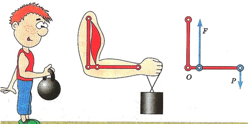
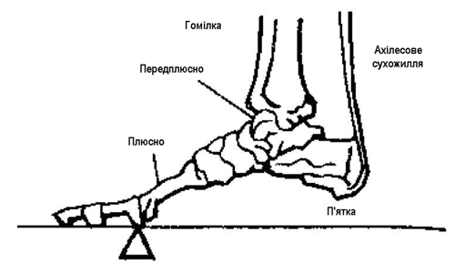
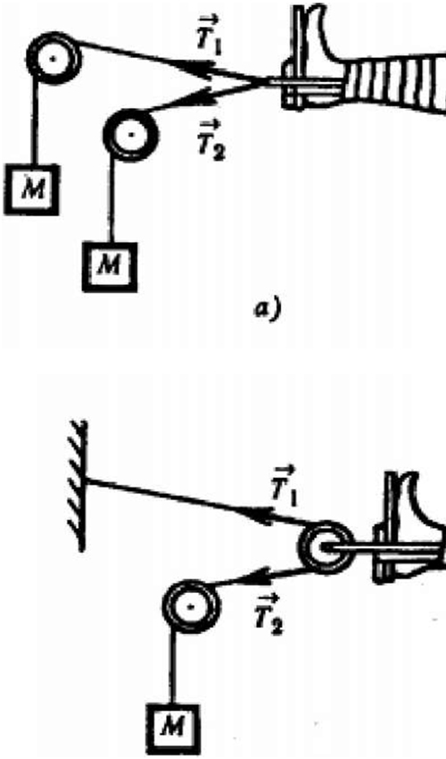

Важелі в тілі людини
Важіль. Умова рівноваги важеля
Як ви знаєте, людина - істота багатогранна: вона підкорила найвищі гірські вершини, опустилася в найглибші точки Світового океану, побувала на Місяці, розщепила атомне ядро. Але найчастіше ми не замислюємося, а що ж ми являємо собою, що ми можемо зробити, якими можливостями й ресурсами володіємо?
Статика займається вивченням сил, що діють на тіла, які перебувають у рівновазі. Методи статики застосовуються у різних областях діяльності людини. Архітектори й інженери повинні вміти розраховувати сили, що діють на конструкційні елементи будинків, мостів, верстатів, автомобілів, космічних кораблів і інших об'єктів, оскільки будь-який матеріал може деформуватися або руйнуватися, якщо прикласти до нього дуже велику силу.
Важіль – це тверде тіло, що може обертатися навколо нерухомої опори. Найменшу відстань від осі обертання до напрямку дії сили називають плечем сили.
Досліди показують, що важіль перебуває в рівновазі під дією двох сил, якщо:
- прикладені до важеля сили намагаються обертати його в протилежних напрямках;
- модулі, прикладених до важеля сил обернено пропорційні плечам цих сил: F1/F2=l2/l1
Добуток сили на її плече називають моментом сили. М=Fl.
{kind=link}
З умови рівноваги важеля випливає, що використовуючи важіль, можна одержати виграш у силі. Силою, прикладеною до більшого плеча важеля, можна зрівноважити силу, що значно більша за прикладену. Важіль має дуже важливу властивість, що обумовила його широке поширення в природних механізмах, таких, наприклад, як кістяки людини й тварин. Ця властивість - дуже високий коефіцієнт корисної дії, що досягає 98-100%. Високий КПД важеля визначається тим, що в ньому малі втрати на тертя.
З умови рівноваги важеля випливає, що використовуючи важіль, можна одержати виграш у силі. Силою, прикладеною до більшого плеча важеля, можна зрівноважити силу, що значно більша за прикладену.Важіль має дуже важливу властивість, що обумовила його широке поширення в природних механізмах, таких, наприклад, як кістяки людини й тварин. Ця властивість - дуже високий коефіцієнт корисної дії, що досягає 98-100%. Високий КПД важеля визначається тим, що в ньому малі втрати на тертя.
Важільними механізмами в кістяку людини є майже всі кості, що вільно рухаються: кістки кінцівок, нижня щелепа, череп (точка опори - перший хребець), фаланги пальців.
Головні кістки й м’язи руки людини показані на малюнку. Кисть за допомогою лучезап’ястного суглоба кріпиться до променевої кістки, що, у свою чергу, прикріплюється до ліктьової кістки за допомогою ліктьового суглобу. За допомогою плечового суглобу рука кріпиться до лопатки. Основними робочими м’язами руки, відповідальними за переміщення передпліччя, є біцепс (двоголовий м'яз) і трицепс (триголовий м’яз). Як всі м’яз, вони не можуть створювати зусиль, що штовхають, - вони можуть тільки тягти. Коли людина піднімає однією рукою предмет, біцепс скорочується, а трицепс подовжується. Коли людина опускає предмет, відбувається протилежне, у чому неважко переконатися на досвіді.
Зокрема, щоб удержати вантаж якоїсь маси, необхідне зусилля м’яза, яке майже в 10 разів перевищує силу ваги, що діє на вантаж.
{kind=link}
Інший приклад важеля в тілі людини - череп. Вісь обертання цього важеля проходить через зчленування черепа з першим хребцем. Попереду від точки опори на відносно короткому плечі діє сила ваги голови за - сила тяги м'язів і зв'язувань, прикріплених до потиличної кістки.
Ще одним прикладом важеля в тілі людини є дія стопи при підйомі на напівпальці. Опорою важеля в цьому випадку служить голівка плюсневих кісток. Подолана сила - вага тіла, прикладена до таранної кістки. М’язова сила, що здійснює підйом тіла, передається через ахіллове сухожилля, прикладене до виступу п’яти.
Які сили діють на стопу людини при підйомі на напів-пальці?
{kind=link}
Знання сил, що діють у суглобах і м'язах людини, дуже важливе для медицини (і, насамперед, для лікування травм), не менш важливе для наукового підходу до занять спортом.
{kind=link}
Багато завдань на рівновагу сил можна сформулювати, розглядаючи системи витяжки кісток. При лікуванні травм, щоб зростити зламані кості або усунути інші ушкодження, необхідно фіксувати травмовані ділянки й урівноважувати сили, які діють у місці перелому доти, поки він не зрастеться. У лікарській практиці для цього застосовують різні системи витяжки, які використають вантажі, троси й блоки. Конструкція всіх цих систем заснована на тому, що натяг тросу однаковий у всіх його точках і дорівнює Мg, де М - маса вантажу, що створює натяг. Блоки, звичайно, служать для зміни напрямку дії сили.